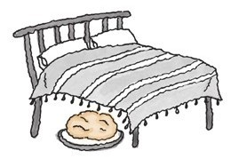
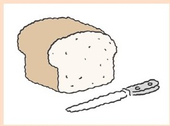
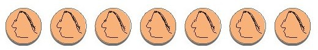
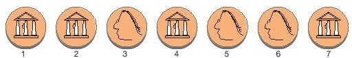
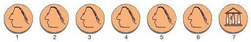
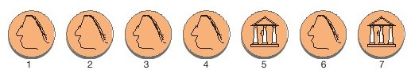
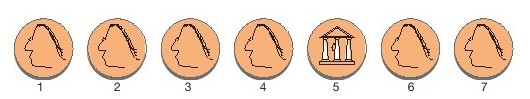
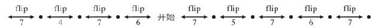
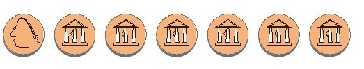

我不时会听到有人说：“我不会烤面包”。
我常常会听到这样的说辞，很熟悉，即使用词不同，但语气一致。
“我不懂数学”。
相似的自白，同样的伤感。与缺点无关，也没有焦虑。其实，每一个人都会数学，而所有人都会烤面包。做数学题与烤面包都是在练习解决问题，而最值得我们注意的是解答数学问题的最佳方法也是解决厨房中烹饪问题的最佳方法。
对于解决问题我有自己的一套简单理论。要解决问题你需要的是人格分裂。首先，你需要自信。好的问题解决者确信自己能解决任何事情。面对一个问题，成功的解决者会无所畏惧，他们相信自己会找到突破口。
但是，你还需要怀疑。一旦你有了一个答案，自信心会变得没什么意义。你需要质疑自己的答案，担心它是否正确。检验你的答案，剖析它，最终，好的解决者的行为似乎在告诉我们他们已经确信自己的答案有不对的地方。
我想你可以理解这些人格的意义何在。起初，你需要自信，没有自信很难开始。即使你已经开始了，缺乏自信会削弱你的力量和决心。
之后，当你有了一个答案时，你需要的是谦虚、具有质疑精神的人格。你想要分析、理解自己的答案，检查是否还有疏漏和欠缺之处。
第一种，即自信的人格是最难得的，因为你不能仅靠简单的决定，想要自信就可以自信的。我向我的学生们建议，用一种替代品来代替自信的人格，似乎收效很好。我告诉他们自大、傲慢一些，而绝大多数人都能做到。
烤面包
我们通过一个例子来看看自大、傲慢如何在厨房里行得通。就一起聊聊面包吧，那么多人写过第一次尝试烤面包的恐怖经历，总是会有各种困难，想要知道的太多，而失败的原因五花八门，至少看起来是这样。酵母放了多少，怎么揉面，如何给面团定形，何时算烤得恰到好处，这些要花很长时间才能学会！
我们来看一位自负（无知）的厨师如何用一个简单的烹饪方法，只尝试一次烤面包就成功的。
超清淡面包
1包干酵母
½茶匙糖
杯温水
2茶匙盐
2汤匙油
2杯温水
5～6杯面粉
2个9英寸的面包烤模
用于润滑烤模的黄油
用一个小型容器将酵母、糖和杯温水混合在一起。在一个大碗中放入盐、油和2杯温水。当酵母混合物起泡时倒入大碗中，开始添加面粉。每次放入的面粉量为一杯或少于一杯，直到硬面团成形。揉面后用一块湿布盖住面团，让它开始发酵。当面团变成原来的2倍大时，将它拍打下去。待面团再次发酵时，将它分成两份，定形成要烤的面包形状，之后放入用黄油润滑过的烤模。当面团膨胀为原来的2倍大时，将它们放入提前预热到220摄氏度的烤炉中，烘烤45分钟。如果拍打面团的底部发出空空的声音，并且面团可以轻松滑出烤盘，就说明面包烤好了。取出烤好的面包，晾凉即可。
就是这样，极简抽象派的食谱。
谦卑的厨师会说：“这并没说明要加多少面粉或者怎么揉面。我需要提前知道这些，但是我并不知道。真是没什么希望能做成了。”
但是自大的厨师这样想：“食谱里没有说明的部分一定是不太重要的，我要试试看会发生什么。”
让我们也自大地尝试一下吧。
直到加入面粉这一步我们都没有任何问题。我们没有面包粉，用的是多用途面粉。（烤面包不也是多种用途中的一个吗？）我们加面粉直到很难再搅动面和水时，也许是时候揉面了。
我们对揉面的概念认识不清。你也许看过“铁厨”如何揉面，或者在Youtube网上看过一些相关的视频。无论怎样，我们都要把双手放到碗中，来回揉混面团。面可真黏，看上去不对，可能需要加入更多的面粉。我们再加一些面粉设法解决这个问题，可能会有一些面粉洒在台面上，也可能不会。过了一会儿，我们判断揉面可以结束了。生面团看起来一点都不光滑圆润，但是我们还是把它放到一边发酵。
在哪发酵呢？碗里？在操作台上？床下？用碗好像不好，因为有些面粉沾在上边，所以我们把生面团放在操作台上。

我们就这么莫名其妙地按食谱做了一遍。生面团没有发酵好，稍稍摊散开了。我们已经在这上面耗掉几个小时，还是要继续。那我们做粗面包吧，但烤出来的是面包吗？
刚出炉的面包竟然……相当不错！
为什么呢？老实说，我们做得很差劲。我们没把生面团揉好，而我们把它放在操作台上会使它变干。我们参照的食谱是基本的、最原始的指导。我们没给生面团添加任何令它可口或者给人惊喜的东西。但为什么我们烤出来的面包很好呢？
首先，超市里的面包太难吃了[4]！我们必须经历惨败甚至做出更糟糕的东西。无论我们做什么，我们的面包都会有无与伦比的味道和酵母的芳香。这是真的。
其次，面包师是最有包容性的。你用的酵母可多可少，糖和油也一样。你揉面的时间可长可短，生面团的发酵时间也没有长短限制，甚至烤制的时间也可以或长或短。你还是可以做出不错的面包。
当然，也会发生奇怪的事情。有一次我做的面包溢出了烤盘的边缘，把面团从烤盘上分离下来是场硬仗，面包的样子可笑至极，但是味道真的很棒。
那如果我们失败了会怎样呢？
一旦失败，我们浪费的食材至多值一美元。我们没花太多时间，也没有令任何人失望（请客吃饭的时候我们才不会这么自大）。但是我们学到了一些东西。
我们会从每次烹饪中学习。谦逊的个性会让我们仔细思考自己的好恶。我们搜寻更多知识、食谱和说明书，我们会为可能提升的面包品质而筹划着。
我一周会烤好几次面包，并且坚持了25年。我的基本配方是历经多年总结而成的，难以置信的好，而我也是这么说我自己的。
我会在这本书里把我的配方传给你，并且会谦虚地接受你的表扬。但是另一个我又希望你不理会我的配方，而是自己探索更完美的面包味道。如果你是这样做的，你会感到快乐（也会吃得舒服），而你最终会得到全新的、令人惊叹的烤面包。
在我公布制作方法前还有一点点事情需要说明一下。我想要的是那种以小麦为主、口味清淡的面包。我希望它是有益健康，令人愉快的。我希望它很可口但是容易得到。这种面包绝大部分成分是精白面粉，所以质地清淡。因为有小麦胚芽，所以它有全麦面包的蛋白质，而配方中的其他部分还会有额外的小麦成分。
这个方法简便，烤出的面包很可口。我一共只需花费15分钟的时间，而这些时间可以分散到一天中空闲的时间里去，每天都可以为家人提供新鲜的面包。
“亨勒牌”面包

1茶匙干酵母
½茶匙糖
杯温水
2茶匙盐
2汤匙油
2杯温水
½杯全麦面粉
¼杯熟小麦胚芽（熟麦芽粉）
1茶匙芝麻
2～4汤匙普通香醋
2～4汤匙面包屑（可选项，见说明）
面粉
2个9英寸的面包烤盘
对烤盘进行润滑的黄油
和面、发面和烘焙的方法与之前介绍的一样，你需要在面粉中加入其他成分。
说明：
·我不会给出面粉的量，大概是5～6杯，但你大可以自己决定用量（见下文）。刚开始的时候少放面粉，直到加够量，这样面粉的干湿度刚好适合揉面。在揉面的过程中，你可以根据自己的喜好再加入面粉。
·我和面、揉面和发面用的都是一个很大的碗。在揉面后和发面前我没有将碗洗干净。你要问为什么？因为我懒（见第八章虚荣和懒惰）。而且是否清洗无关紧要。
·揉面的首要目的是把生面团和好。等你能熟练揉面的时候你就能明白。揉面的第二个目的是让麸质舒展，可以增强生面团的弹性，这一点对其他一些面食的制作很重要，但是做面包时只需稍稍揉几下，生面团的弹性就够了。发面的时间变长也有助于增强弹性。
·加芝麻的效果很令人惊喜。仅仅那些洒在生面团表面的芝麻经过烘烤就会使面包变得更加可口。
·在面中加醋是我的一位英国同事理查德·凯耶建议的，他用的是麦芽醋（在他生活的地方这种醋味道很好，价格低廉）来制造轻微的酸味。我住的地方麦芽醋很贵，我用的香醋却相当便宜。我觉得自己加的醋尝不出酸味，但是确实对口味提升和发面有帮助。
·配方中几乎所有参数都是可变的。你揉面的时长可以是60秒或者10分钟。发面的环境可冷可热（冷的时候发面用时会变长，就这么简单）。你可以让面团发酵一次、两次、三次甚至四次，而烘烤的时间可以是40分钟或者1个小时，最主要的是，你不能搞砸了。
·可能你会搞砸。如果生面团发酵的时间太长（完全被忽略了），它就会发酸，这样就不好了。
·同样，如果生面团在烤盘中醒发的时间过长，它会塌陷下去，拷出来的面包表面是有凹坑的，是发硬的。
·总而言之，这种面包除了纤维以外，和全麦面包的营养一样。想得到更多的纤维素，那就再多吃些面包。我就是这么做的。
营养成分表
食用份量：2片
每条面包的人份：大约8人
卡路里：162
脂肪中的卡路里7
占每日营养摄入量%
脂肪总量8克
饱和脂肪0克
多元不饱和脂肪0克
单一不饱和脂肪0克
胆固醇10毫克
钠236毫克 1%
碳水化合物总量32.5克 11%
食用纤维1克 4%
糖＜1克
蛋白质4.5克
维生素A0%
维生素C0%
钙0%铁10%
维生素B130%
维生素B210%
烟酸6%
维生素B68%
叶酸25%
维生素B1230%
磷30%
镁20%
锌30%
铜4%
·我对面包屑做过说明。刚出炉的面包会有一层漂亮的暗色硬皮。当你把它切成片时，会产生很多面包屑。面包屑中包含面包中最可口的微粒，我对浪费它们的行为深恶痛绝。因此，我将这些面包屑收集起来，不时地在其他食谱中使用。直到有一天，我意识到，这些面包屑也可以提升面包本身的味道。
·面包屑的芳香有一部分来自芝麻。当我加入面包屑的时候，我只用半茶匙的芝麻。
·用面包屑是为了调味这个理由足够了，但是用面包屑还有一点好处，那就是我可以在营养成分表中增加一条提醒注意：
本产品包含4%（消费后的）再生材料
·我常听人说他们曾经尝试做面包，但是结果一团糟。当然，他们没试过我的配方。即便如此，我还是会质疑。可能出炉的面包和他们所希望的不一样，但那又怎样？他们还是做出了面包。并且我很快就会相当肯定地说，那曾是新鲜的面包。你怎么能就那样败下阵来？
而且，当你做面包的时候，你应该爱你的面包，它是你的面包。
比方说，你的弟弟数学得了C，等他放学回来后你难道就不爱他了吗？
诺贝尔物理学奖获得者，物理学家理查德·费曼被视为自信者的典范。他求知好学，但是好奇心很多人都有。他很杰出，但很多人都很出色。让费曼脱颖而出的是无畏。他觉得自己能解决任何问题。对他来说，无知不是障碍。他那本精彩的回忆录《别逗了，费曼先生！》讲述了很多这方面的例子——认知能力、蚁学（蚂蚁）、性学、锁匠行业和泌尿学。
伟大科学家与平庸的天才之间的区别就在于：
自信
谜题解答
我们一起看看自负的态度对解开数学题有什么帮助吧。我之所以选择这个智力题是因为它说出了爱叫板的意义。
这个智力题是建立在Spin-Out（旋扣[5]）这款智力玩具的基础上的。Spin-Out在一些商店里可以买到，有不同的版本（有一款是大象），它是一个条形壳体，里面有一个带有数个凸点旋钮的、可滑行的塑料条。
考虑到你可能没有Spin-Out，我们就来看一道不同的智力题，两者在结构上是一样的，我们就叫它Flip-Out（弹扣）。
开始时将7个硬币排成一行，头像朝上：

我们的目标是让所有硬币背面朝上。规则是你可以翻动
·右侧最远的硬币，或者
·处在最右侧的头像朝上的硬币的左侧硬币

你可以选择7号硬币（右侧最远的硬币）或者5号硬币（因为6号硬币是处在最右侧的头像朝上的硬币）。
我们来看看自负的难题解决者（我们就叫她斯梅德利吧）是怎么处理的。
一开始有两种可能性，选择7号硬币或者6号硬币。斯梅德利会怎么做呢？略有迟疑后，斯梅德利选择了7号硬币。

理由呢？
“没有什么理由，真的”，斯梅德利说，“我得做些什么。”下一步？……斯梅德利可以动5号或者7号硬币。
选择7号硬币就会使题目回到起点，这可不是自大的难题解决者该有的。他们从不会回头！[6]
所以，斯梅德利选择5号硬币。

斯梅德利对接下来的谜题的走向有什么预判吗？“没有什么想法，”斯梅德利说。
斯梅德利现在可以选择5号或者7号硬币，而选择5号硬币等于还原了上一步，所以斯梅德利选择了7号硬币。

斯梅德利只是稳步前进，没有太费力气思考。可能你看出来发生了什么，解题规则中出现了一条线索。解题规则说在每一步你都可以选择
·右侧最远的硬币，或者
·处在最右侧的头像朝上的硬币的左侧硬币
那就只有两种可能性。如果你稍稍动一下脑筋就会发现，无论你动哪一枚硬币，你都会在下一步让它恢复原状。换句话说就是你永远只有两个选择。斯梅德利选择其中之一，动了7号，之后是5号，然后是7号。而另一个选择，她可以动6号，之后是7号，接下来是4号。在每一步你都可以继续下去或者转向反方向。

这个谜题要不是伪装得好，真的很像下面这个迷宫。
一旦你着手解题，你其实没有什么选择，你能做的只有继续前进或者返回原点。
如果你曾经玩过硬币游戏，你会明白此时这位自大的难题解决者遇到了什么事情。如果选择继续走下去的结果就是所有硬币背面朝上。
如果选择另外一个就会走进死胡同，就是这样：

斯梅德利会解出谜题，无论是一次成功还是第二次，她都会解决的，因为她从不往回走。很多人没能解开这个谜题。
为什么？他们选择其中一个解题方向，没多久又开始担心“我是不是错了，我好像看不出一丁点成效。也许我应该退回去！”。他们转向另一个解题方向。很不幸，他们没有之前那么自信了。又过了一会儿，他们又变了，如此反复，来来回回。最后放弃。
缺乏傲慢的态度，这就是问题所在！
但我可能需要为本章节中所有的傲慢态度道歉。你并不自大傲慢，我知道。你和善、谦逊、自信，你可能从未想过傲慢自大地为人处世。你很难成为斯梅德利。
但是，如果你能设法模拟一下自大傲慢的人，你会发现这么做是很有用的。在与难题（食谱）对抗的时候想象一下斯梅德利会做什么，即使毫无头绪，也要保持自信。
而我们接下来，在下一章里会谈谈美学。
什么才是真正的数学之美？这是一个难懂的概念，微妙、抽象而又与知识、智力有关。多年来我一直试图描绘出这种美，但是答案却不期而至。
简而言之，这种美就是芝士蛋糕。